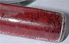

phosphorus

Definition: Phosphorus is a chemical element with the symbol P and atomic number 15. Elemental phosphorus exists in two major forms, white phosphorus and red phosphorus, but because it is highly reactive, phosphorus is never found as a free element on Earth. It has a concentration in the Earth's crust of about one gram per kilogram (compare copper at about 0.06 grams). In minerals, phosphorus generally occurs as phosphate.
Source: Wikipedia
Wikipedia Page
Wikidata Page